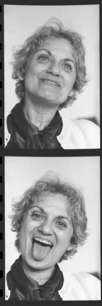

MURIEL COOPER
(1925-1994)
Muriel Cooper had two design careers: first as a print designer and second as a groundbreaking digital designer. Both revolved around the Massachusetts Institute of Technology (MIT), and both were based on her quest to make static medica more dynamic.
MIT's Offic of Publications hired Cooper in 1952 and continued working with her after she established her own studio. She then became art director for MIT press, where she designed classic books, such as Hans Wingler's Bauhaus. She designed the first edition of Learning from Las Vegas; authors Robert Venturi, Denise Scott Brown, and Steven Izenour hated what she did, but many graphic designers loved it.
Cooper took her first comupter class at MIT in 1967, and it bewildered her. However, she could see that computer's potential in the creative process, and soon began the second phase of her career: applying her design skills to computer screens. With Ron MacNeil, Cooper co-founded the research group Visible Language Workshop in 1975, which later became part of the MIT's Media Lab. Cooper didn't write code, but she didn't need to; she was the designer and the thinker. She knew what she wanted visually, and encouraged her students to use technology to present well-designed information.
Cooper presented the group's research at the influential TED5 (Technology, Entertainment, Design) conference in 1994. For the first time, computer graphics were shown in three transparent dimensions, which moved, changed sizes, and shifted focus, instead of the standard Microsoft Windows interface of opaque panels stacked like cards. She made a big impact: even Microsoft founder Bill Gates was interested in her work. Unfortunately, she died soon after of a heart attack, but her legacy in interactive design continues.